| 日付 | 2014年10月11日（土） - 2014年10月12日（日） | ||||
|---|---|---|---|---|---|
| 山域 | 東北の山 | ||||
| メンバー | 家族（妻、長女・3歳、長男・1歳） | ||||
| 山行形態 | 子連れ1泊2日ホテル泊 | ||||
| アクセス | 車、ゴンドラ | ||||
| ルート (Map1) |
|
安達太良山は紅葉が美しいことで有名で、前々から行きたいと思っていた。
紅葉の時期は短かく、また日帰りで行くのは困難な山のため、
毎年行きたいと思いつつ、行く機会がなかった。
今年もこの3連休に行く計画を立ててみたが、今年一番の大型台風が接近中との情報。
ぎりぎりまで天気予報を注視し、前日の金曜日に決行しても問題ないと判断、
日程を1日減らして1泊2日に変更し、宿をとって福島に向かう。
東日本大震災以降、初めての福島訪問だ。
1日目
登山口の大駐車場に到着。9時に着いたのだが駐車場はほぼ埋まっている。
少し手前の駐車スペースに車を停める。
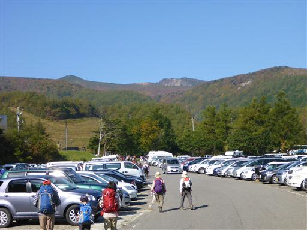
安達太良奥岳登山口の標識。
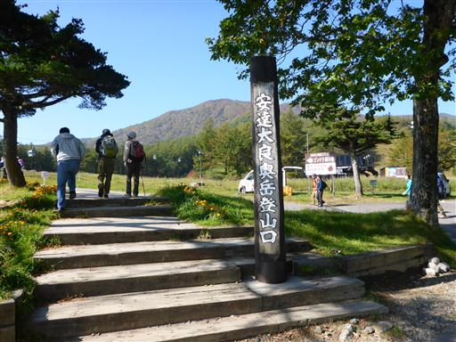
まずはゴンドラのチケットを購入する。人がいっぱいで行列ができている。
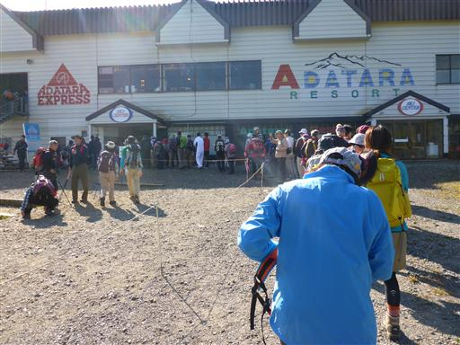
ゴンドラ乗り場。次々とゴンドラが来るため、ここはあまり待たずに乗ることができる。
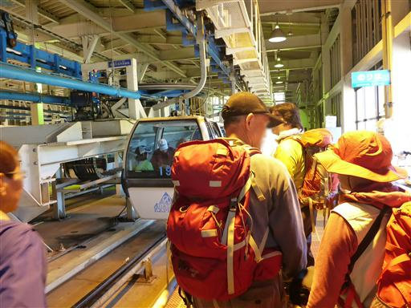
眼下の紅葉が美しい。山頂部の紅葉はもう終わりかけで、今はこの辺りが旬だ。
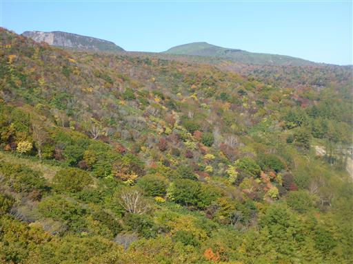
ゴンドラ山頂駅に到着。標高1350m。
さっそく登山を開始する。
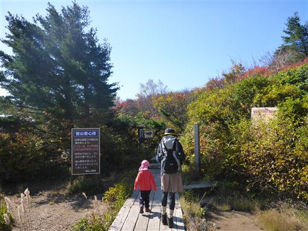
歩き始めてすぐに薬師岳みはらし台に到着する。
ここからは安達太良連峰を見渡すことができる。一番左のピークが安達太良山の山頂だ。
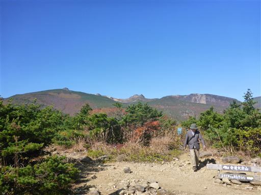
「この上の空がほんとの空です」と書かれた碑が立っている。
これは、高村光太郎の「智恵子抄」という詩集に出てくる
「阿多多羅山の山の上に毎日出てゐる青い空が智恵子のほんとの空だといふ」
という一節からとられた言葉である。
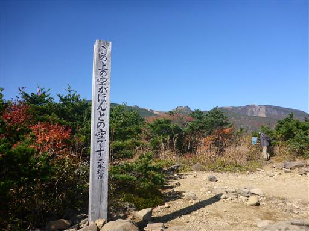
ゴンドラからすぐの場所ということもあり、辺りは観光客でごった返している。
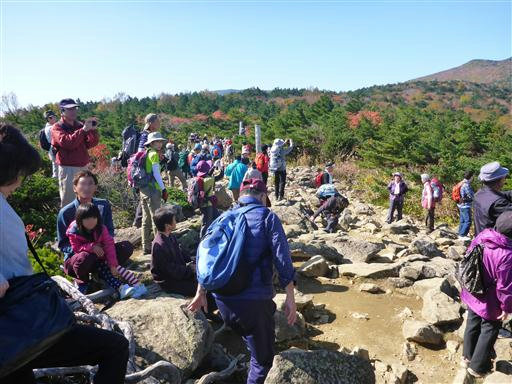
今は紅葉の最盛期。大混雑も仕方がないだろう。
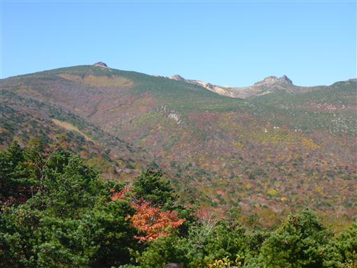
赤黄緑と色とりどりの葉が斜面を埋め尽くす。
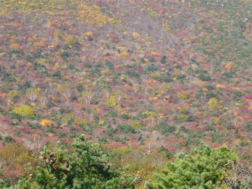
展望を堪能したら、混雑する薬師岳みはらし台を脱出する。
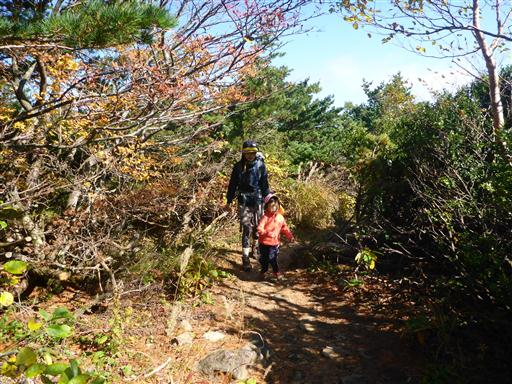
この山は、その形から別名おっぱい山と呼ばれている。
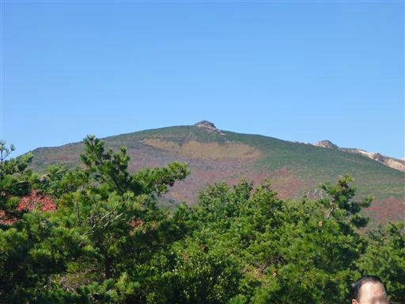
笹と紅葉の織りなす登山道を歩いていく。
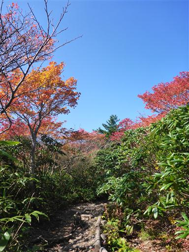
歩き始めてしばらくは落ち着いていたが、だんだん人影が多くなってくる。
こちらは足が遅いため、たびたび横に避ける必要があり、なかなか進まない。
安達太良山は活火山なのだが、御嶽山噴火の影響は全くなさそうだ。
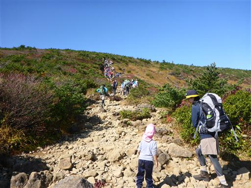
彩り鮮やかな谷を見下ろす。
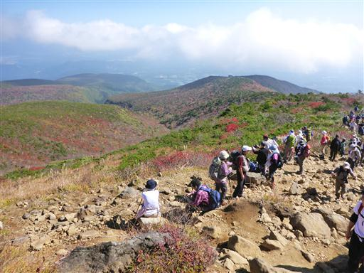
山頂部の乳首が見えてきた。とにかく人が多い。
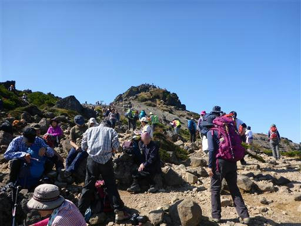
辺りは荒涼とした景色が広がる。
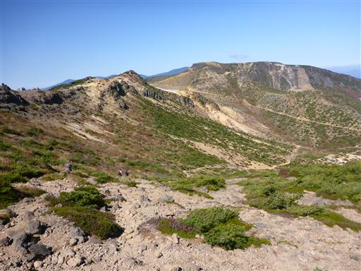
安達太良山頂の標識が立っている。
ここから最後の乳首の岩峰に取りつく。

簡単な鎖場を登る。しかしその後、
行列ができていてなかなか前に進まない。
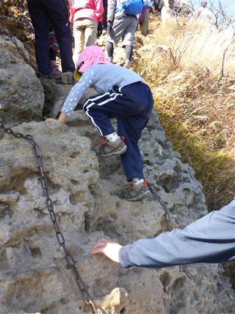
下の広場を見下ろす。どこを見渡しても人人人だ。
行列は途中で全く動かなくなり、狭い登山道の中でずっと待たされる。
行列の先がどうなっているのかもよく見えず、結構辛い。
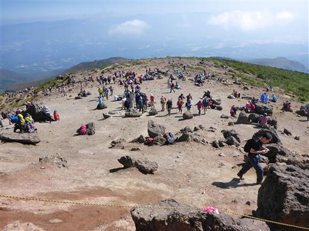
待っていても埒が明かないので、側の岩場を強引に登って山頂に達する。
ようやく安達太良山の山頂に到着だ。標高1700m。
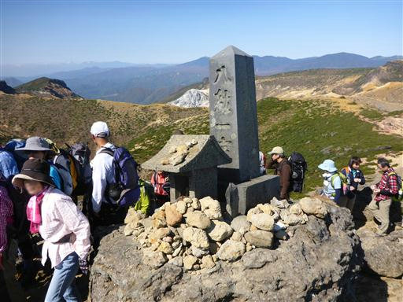
行列は山頂から先もずっと続いている。
山頂部は登りと下りが別の道になっていて、下りの岩場で詰まっているようだ。
その岩場からずっと行列ができている。
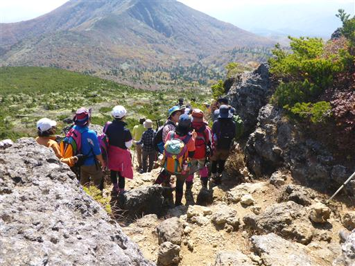
まずは山頂からの展望を楽しむ。こちらから見る磐梯山は三角形だ。
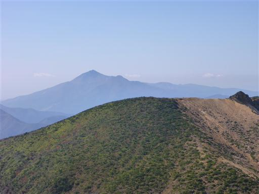
安達太良連峰の一峰、和尚山。なかなか存在感がある。
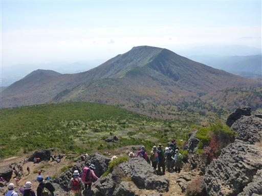
荒涼とした山頂部と、奥には吾妻山。
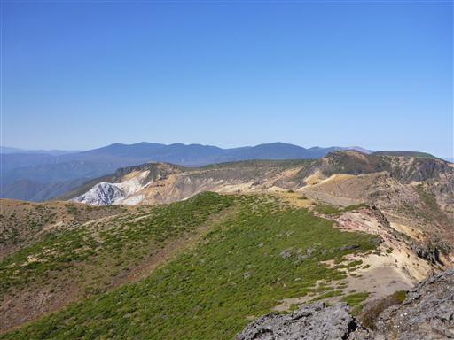
遠く飯豊山まで見えている。
山頂は比較的スペースがあるので、腰を下ろして昼食をとることにする。
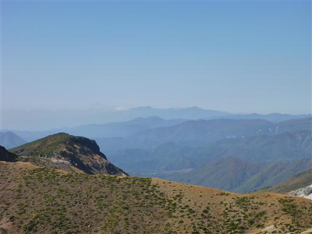
昼食を取り終えても、行列が解消する気配はない。
見た感じ、すぐ下の広場に出るのに30分はかかりそうだ。
こちらは待つことを知らない子供二人を抱えている。
仕方がないので周りを見渡し、山頂部の岩峰から下りられそうな
別ルートを探して、そちらから下りる。
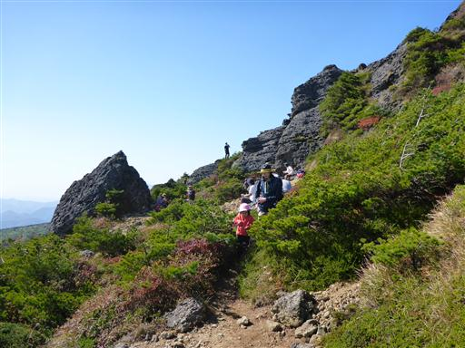
ここが渋滞の原因となっている下りの鎖場。
簡単な岩場なのだが、山慣れしていない観光客が大渋滞を引き起こしている。
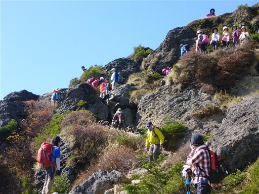
ここから沼ノ平の景色を見に行きたいのだが、娘はグズグズ言い始めている。
家族を置いて、一人速足で往復することにする。
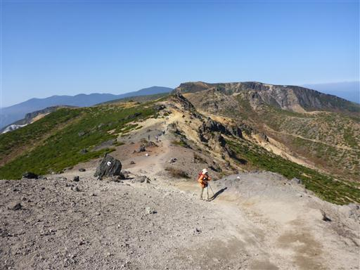
足元の地面が赤い。
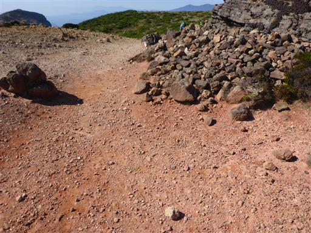
遠くに崖に囲まれた細い稜線が見える。
あっちの方も歩いてみたいが、家族連れではどうしようもない。
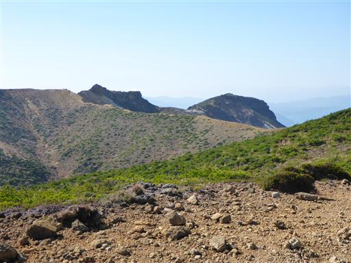
沼ノ平の展望台に到着。
1900年に噴火した時の噴火口で、地面は真白に染まっており不気味な姿だ。
1997年には沼ノ平に迷い込んだ登山者が火山ガスによって死亡する事故が起きている。
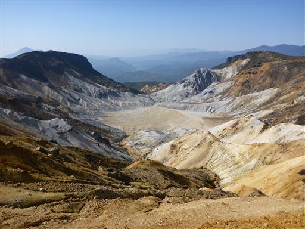
景色を眺めたら早々に引き返す。
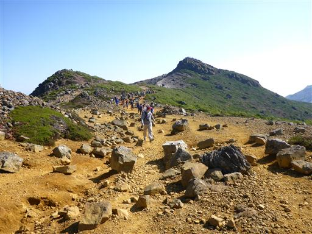
家族と合流し、下山開始。往復20分だった。
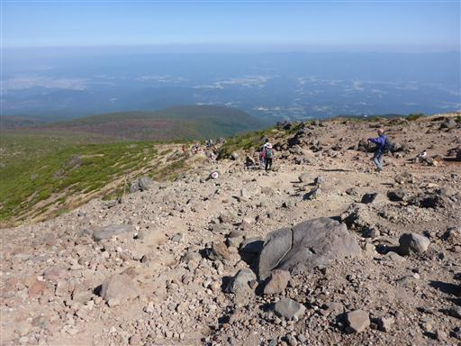
眼下に美しい紅葉を見下ろしながら下っていく。
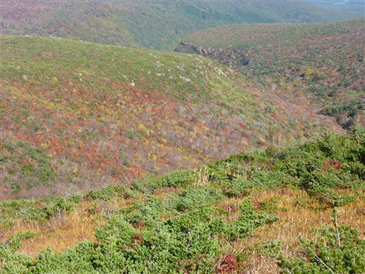
足元には等間隔に平らな石が並べられているのだが、この石がよく滑る。
まさか蛇紋岩が使われている訳ではないと思うが、何の石なのだろう？
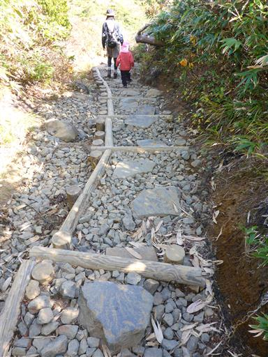
下山地に近づくと木道になる。
だいぶ人がばらけてきて、歩きやすくなる。
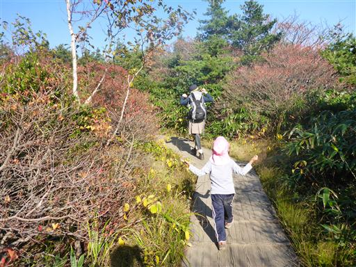
再び薬師岳みはらし台まで下りてくる。まだ周囲には観光客が数多くいる。
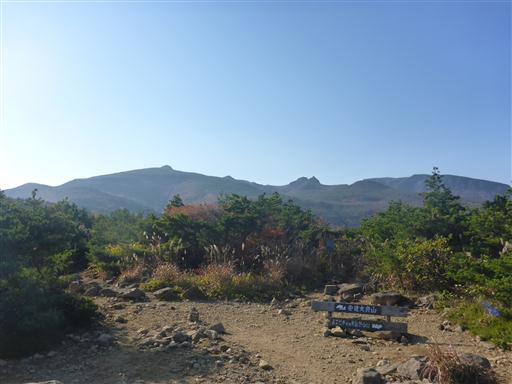
ゴンドラ乗り場に下山。
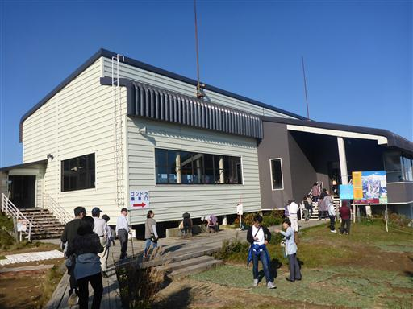
安達太良山の最後の景色を、ゴンドラに乗りながら眺める。
安達太良山の紅葉は美しかったが、いかんせん人が多すぎた。
次行くときは、時間やルートを外して行こうと思う。
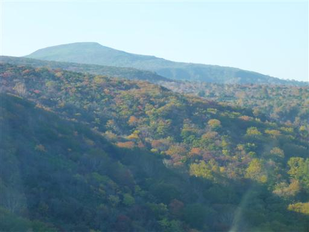
本日の宿は裏磐梯にあるペンション。
安達太良山や明日行く予定の浄土平からは結構離れているが
直前の予約で、この辺りの宿しか空いていなかった。
夜になると周辺は真っ暗になり星空がきれいだった。
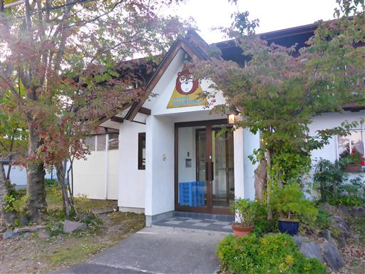